The roots
Austin City Limits goes on air
The PBS concert series built a worldwide stage for Austin music. Its name and live-music spirit later inspired the festival.
A fan-built history of ACL Fest
From the first weekend in 2002 to the 25th edition in 2026—see the posters, artists, stages, and turning points.
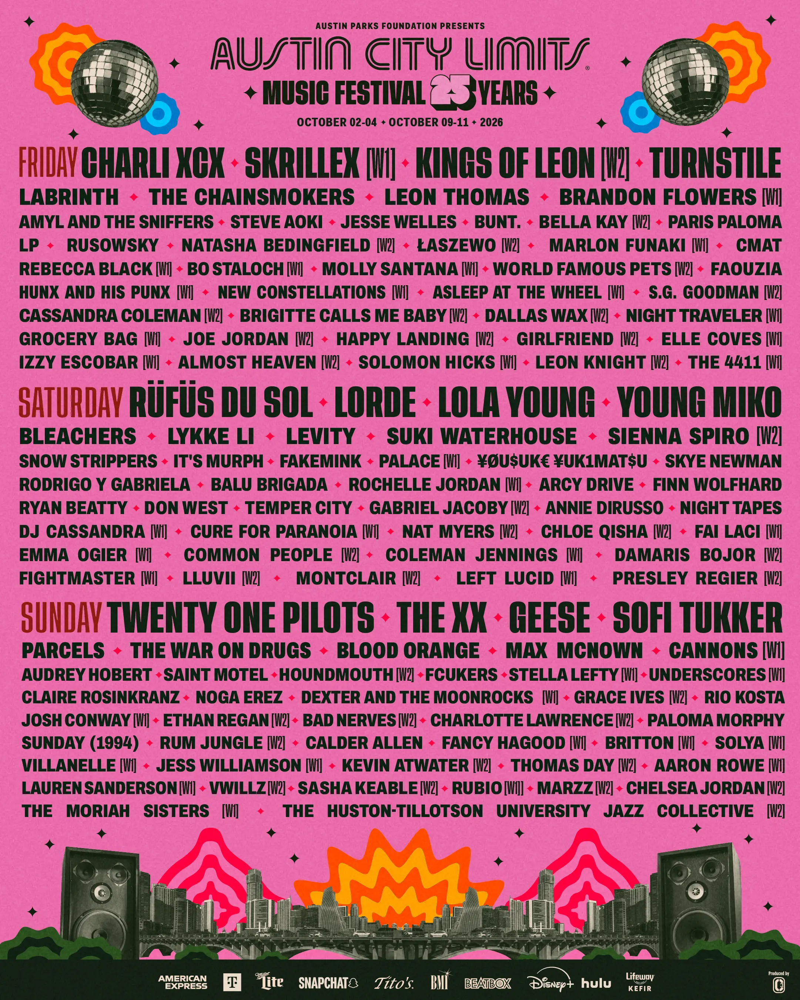
The moments that changed ACL
This is the festival story—not a list of every year. The complete posters and artists live in the archive below.
The PBS concert series built a worldwide stage for Austin music. Its name and live-music spirit later inspired the festival.
Charles Attal and Charlie Jones assembled the debut in months: two days, six stages, and Texas music at its center. Austin Parks Foundation presented the event, with the team that became C3 Presents producing it.
The second festival expanded to Friday, Saturday, and Sunday—the three-day shape ACL still uses today.
ACL doubled to two consecutive weekends. Then Austin weather wrote its own ending: flooding canceled the second Sunday.
The pandemic canceled ACL in 2020, the archive's only year without a lineup. Music returned to the park in 2021.
More than 120 artists played for 75,000 attendees per day. Since 2006, the festival partnership has directed more than $71 million to Austin parks.
Twenty-five festival editions, nine stages, two weekends, and another meeting beneath the flags.
The lineup poster archive
Scroll or use the arrows. Select a poster to see the major acts and the smaller names that became big later.
Just announced · 2026
Choose a weekend and day to see the official set times. Click the schedule to open the full-resolution image.
Your selected schedule appears here. Click it to enlarge.
Check ACL's live schedule for updates ↗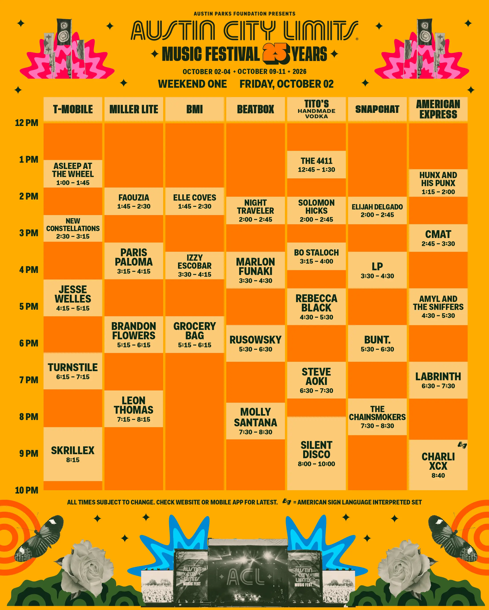
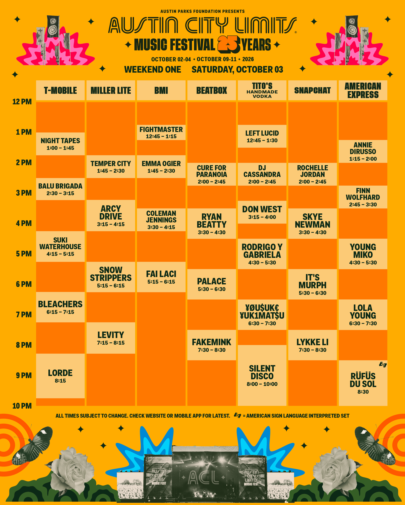
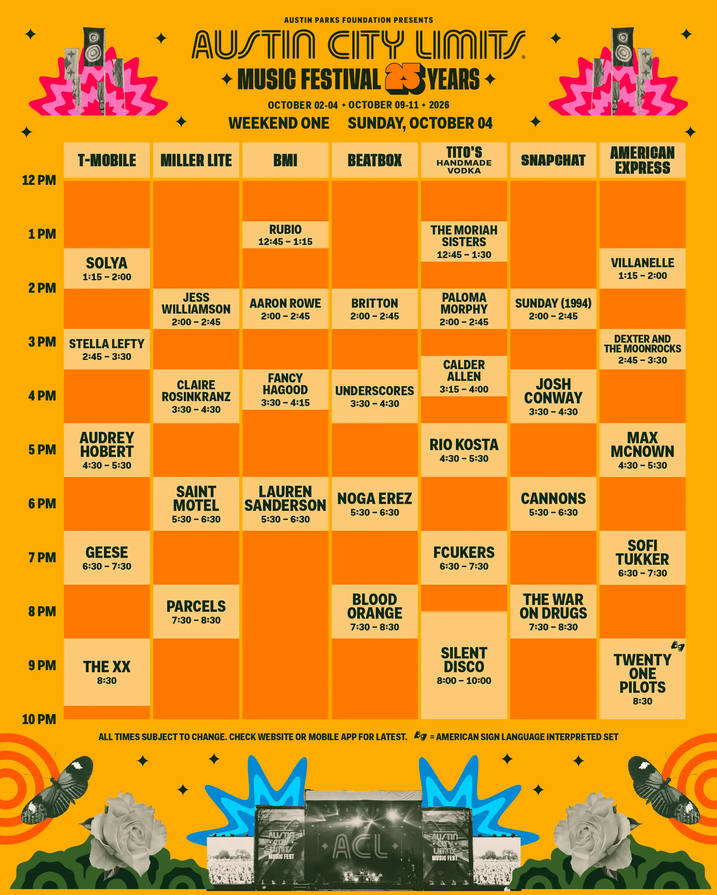
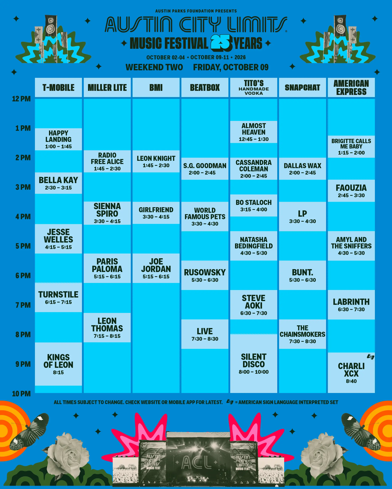
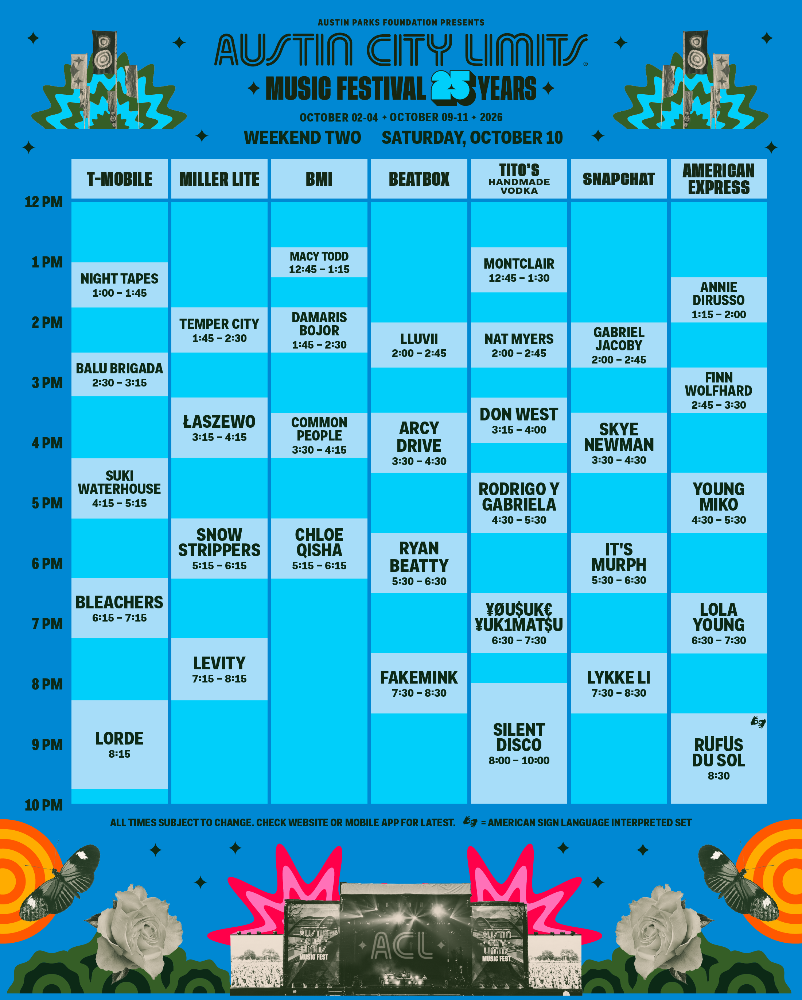
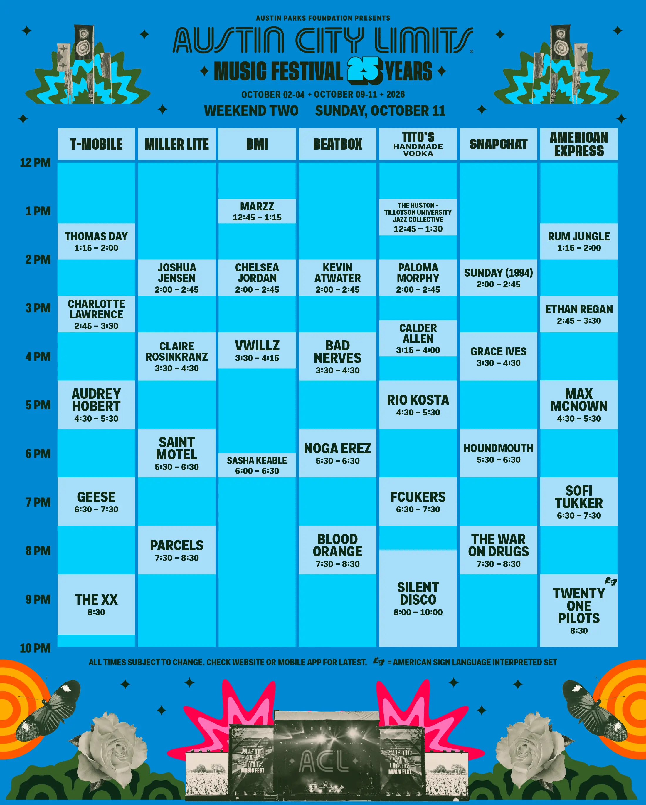
Finding your way
Hover, focus, or tap a stage marker to match its place on the 2025 map with a real stage photo.
Open the full map ↗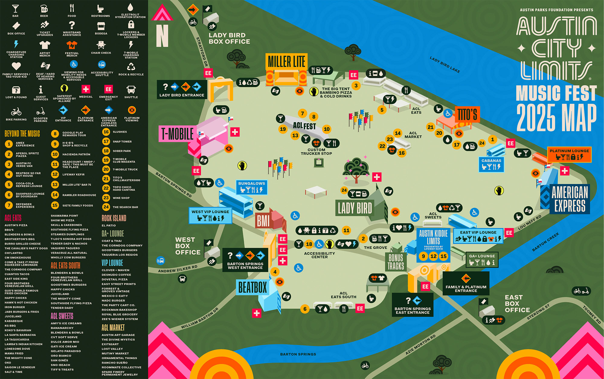
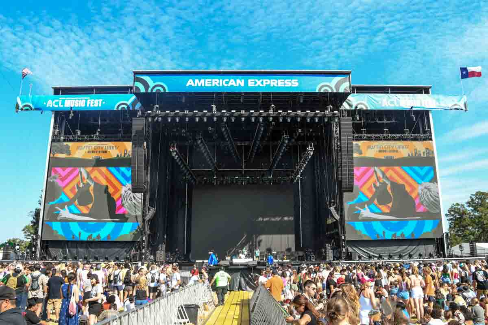
From the photo archive
Historical photographs put the faces, dust, stages, sunsets, and scale back into the timeline.
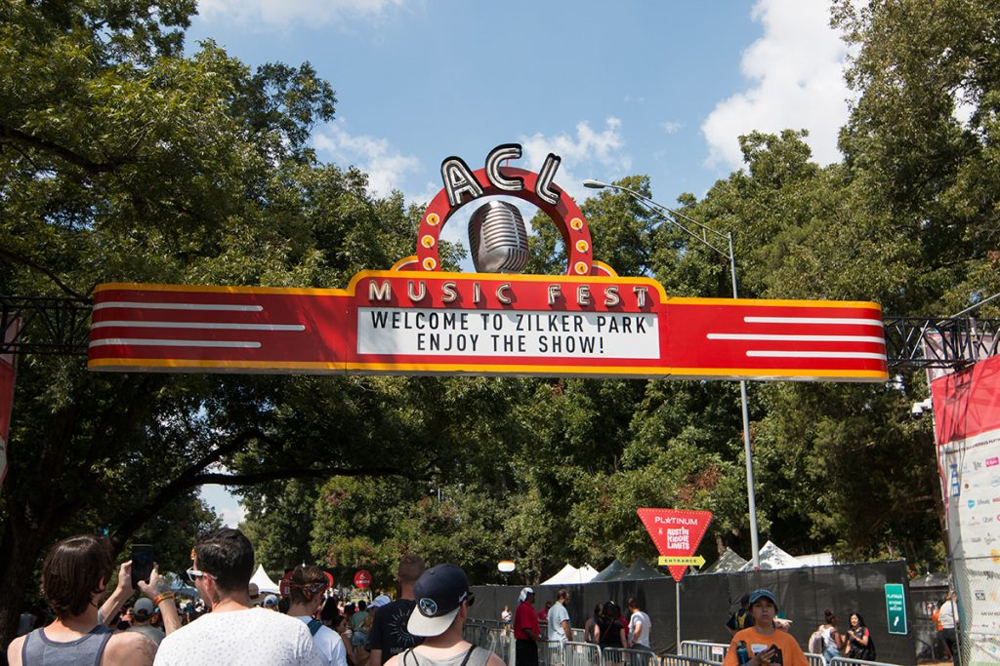
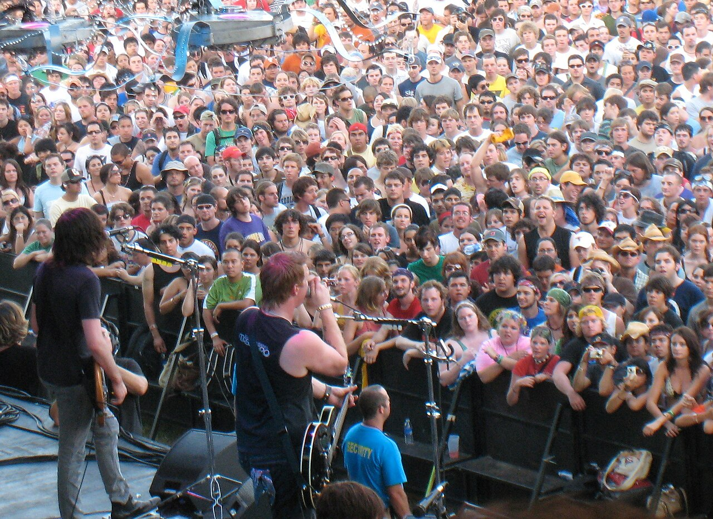
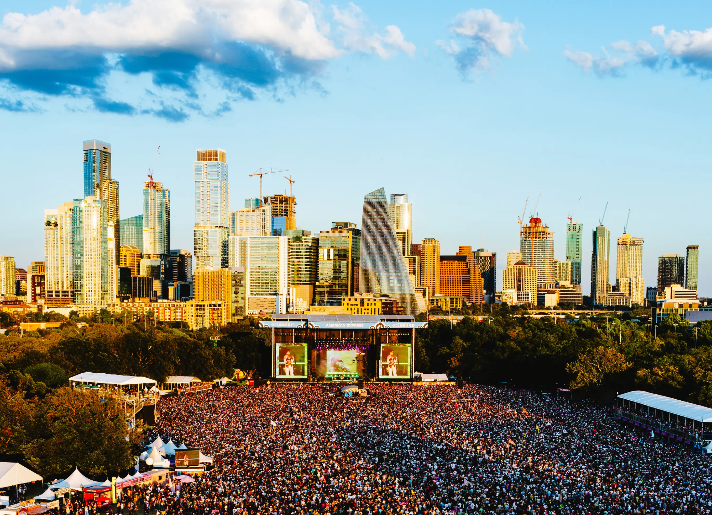
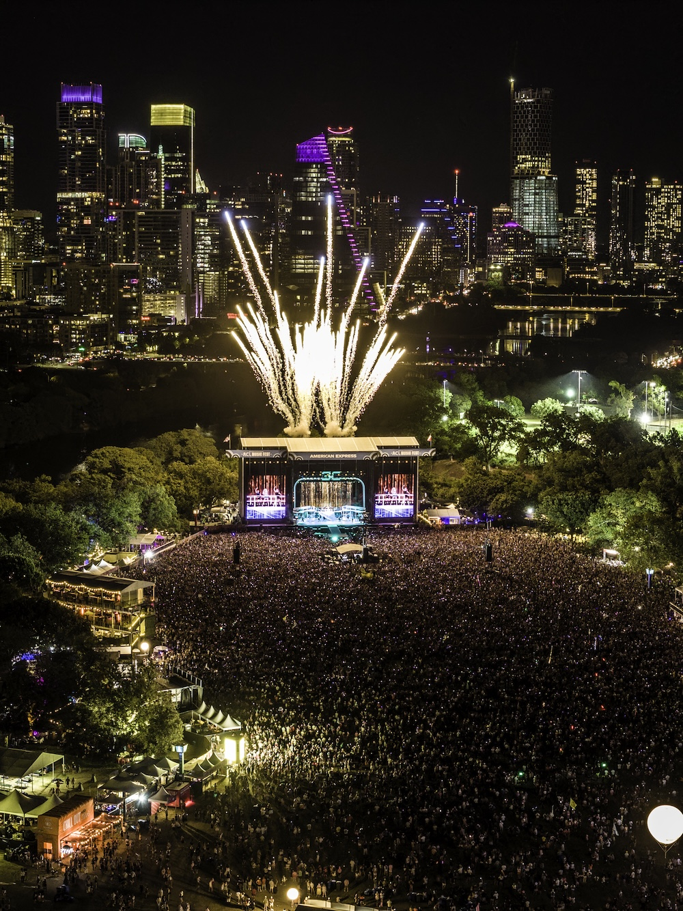
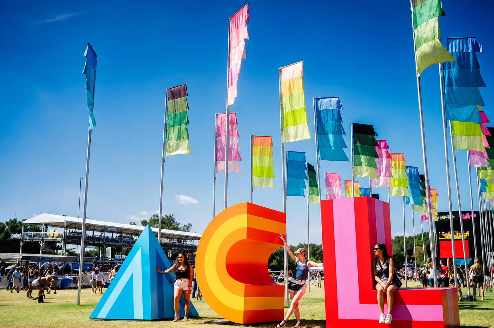

Latest complete layout · 2025
Nine performance spaces filled Zilker Park, from the two main stages to smaller discovery spots.
East-side main stage for many of ACL's biggest headliners.
West-end main stage, formerly known as the Honda stage.
North-field tent stage with a long-running place on the ACL map.
Northwest stage close to the Lady Bird entrance.
The stage previously carrying the T-Mobile name.
Known for developing artists and early discoveries.
A family-focused stage with music and programming for younger festival fans.
Compact southwest stage near Barton Springs.
East-side space for performances and programming.
Stage names are from the 2025 map; 2026 sponsor names may change. Honda remains part of ACL history, but it was no longer a stage name in 2025.
By the numbers